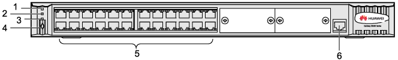

The LAN switch is installed in the GBCR. Each BSC should be configured with one LAN switch.
The LAN switch provides 10M/100M adaptive full-duplex Ethernet ports for the BSC. The LMT computer accesses the BSC through the LAN switch. The BSC also accesses the M2000 through the LAN switch.
Appearance of the LAN Switch
The LAN switch used in the BSC is the Quidway S3026C.
Figure 1 shows the LAN switch.
Front Panel of the LAN Switch
The components on the front panel of the LAN switch are the mode switch button, configuration ports, and LEDs, and Ethernet ports.
Figure 2 shows the front panel of the LAN switch.

| (1) Power LED | (2) A/L LED |
| (3) D/S LED | (4) MODE switch button |
| (5) 10M/100M adaptive full-duplex BASE-TX Ethernet ports | (6) Configuration port (CONSOLE) |
You can configure the LAN switch through the configuration port to meet the BSC requirements.
You can change the status indicated by the LEDs of the 10M/100M BASE-TX Ethernet ports by setting the MODE switch button of the LAN switch.
LEDs on the Front Panel of the LAN Switch
The LEDs on the front panel of the LAN switch consist of the power LED, A/L LEDs, and D/S LEDs.
Table 1 describes the LEDs on the front panel of the LAN switch.
LED |
Color |
Status |
Meaning |
|---|---|---|---|
POWER |
Green |
On |
The power supply to the LAN switch is normal. |
Off |
The LAN switch is not powered on. |
||
A/L |
Yellow (on the left) |
On (blinking) |
The port is active and there is data flow. |
OFF |
The port is active but there is no data flow. |
||
Green (on the right) |
ON |
The port is correctly linked. |
|
OFF |
The port is not linked or wrongly linked. |
||
D/S |
Yellow (on the left) |
ON |
The port is in full duplex mode. |
OFF |
The port is in half duplex mode. |
||
Green (on the right) |
ON |
The data rate on the port is 100 Mbit/s. |
|
OFF |
The data rate on the port is 10 Mbit/s. |
Only ports 2, 4, 20, 22, and 24 on the LAN switch are used. The other ports are reserved.
Rear Panel of the LAN Switch
The components on the rear panel of the LAN switch are the DC power socket and the PGND post.
Figure 3 shows the rear panel of the LAN switch.